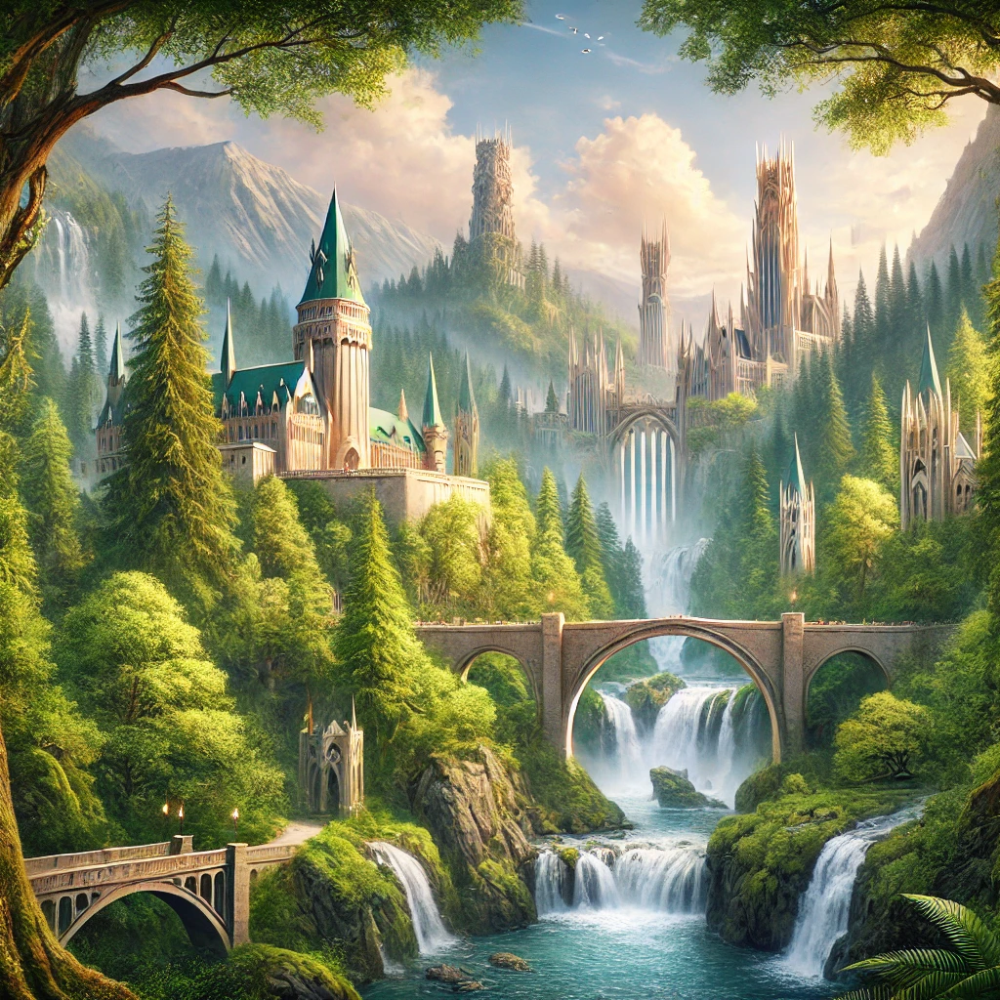
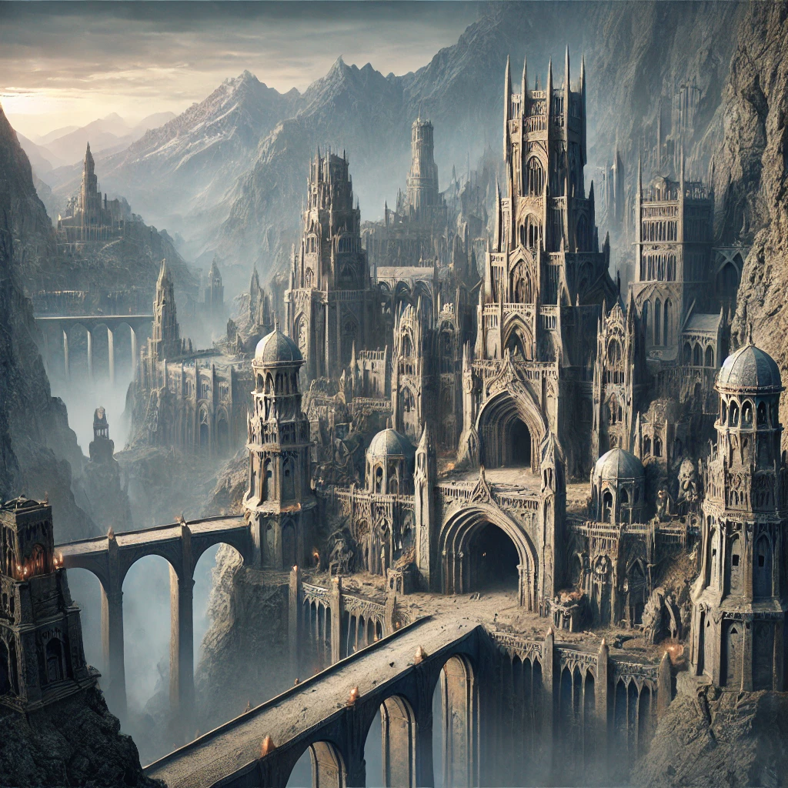
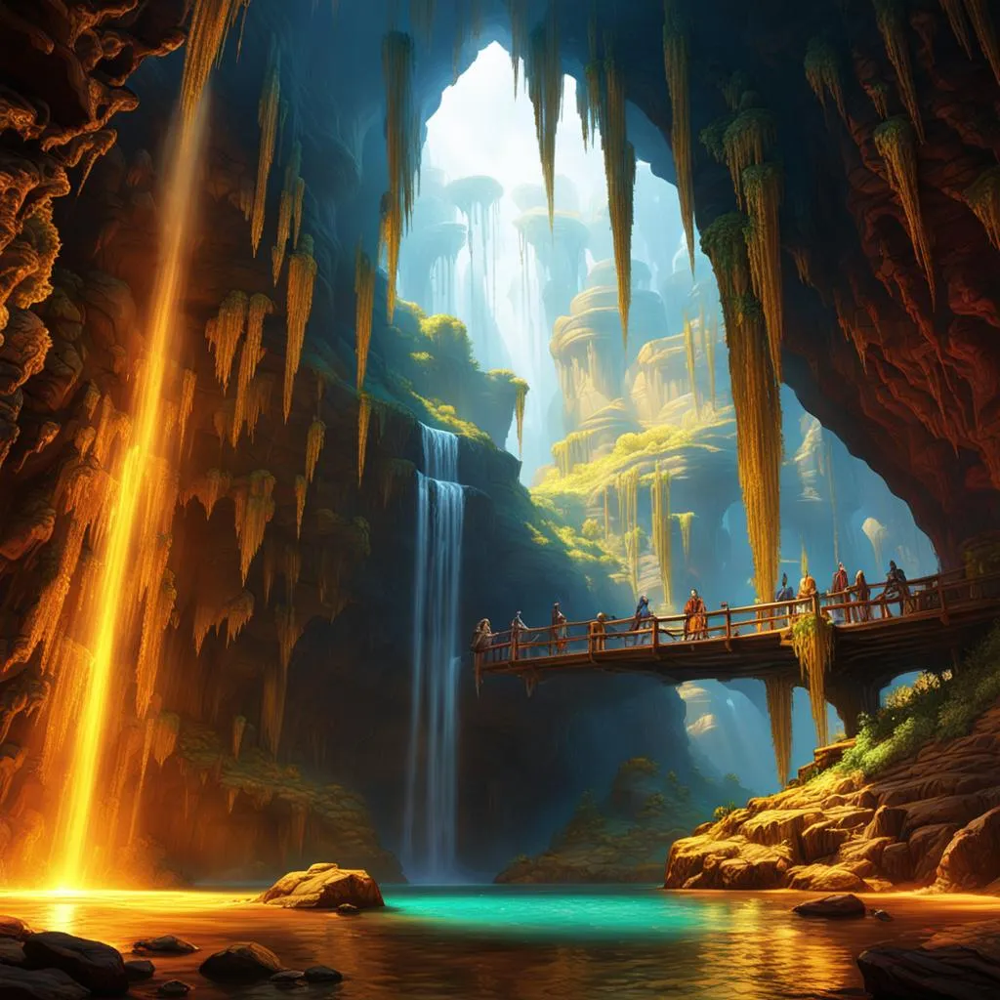
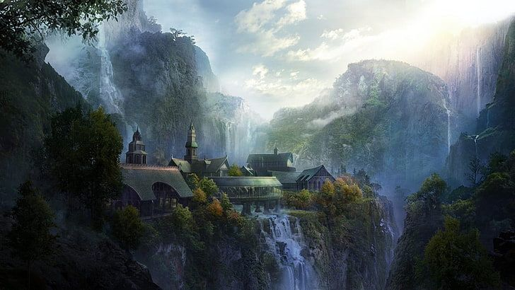
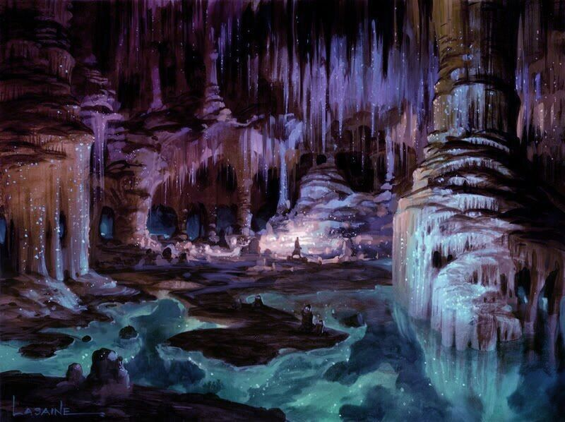
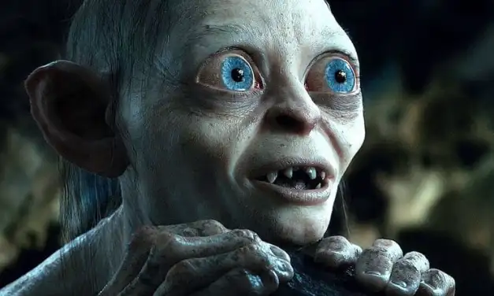

Viajar por la Tierra Media es una experiencia única e inolvidable. Atravesar las siniestras tierras de Mordor, con su aire sofocante y cielos oscuros, te llena de tensión a cada paso, mientras la sombra de la Torre Oscura te observa desde lejos. Llegar a Rivendell, en cambio, es como entrar en un sueño; el murmullo de los ríos, la música suave de los elfos y el aire puro te hacen sentir que el tiempo aquí casi se detiene. Desde las verdes praderas de la Comarca hasta los imponentes salones de Gondor, cada lugar vibra con la magia y el misterio de antiguas leyendas.
RIVENDELL
Rivendell es un encantador refugio élfico situado en un profundo valle rodeado de majestuosas montañas, donde la naturaleza y la arquitectura se entrelazan en perfecta armonía...

MORIA
¡Bienvenidos a Moria! Esta antigua ciudad subterránea, tallada por los enanos en las Montañas Nubladas, es famosa por sus colosales columnas y majestuosas salas. Aquí, los enanos extrajeron el valioso mitril, creando una ciudad imponente llena de historia y misterio. ¡Explorad con cautela, pues sus túneles guardan secretos milenarios!

AGLAROND
¡Bienvenidos a Aglarond, un destino encantador rodeado de majestuosas montañas y fascinantes cavernas! Aquí podrás explorar impresionantes paisajes, disfrutar de senderos serenos y descubrir la rica historia que envuelve esta tierra. Déjate envolver por la tranquilidad de la naturaleza y vive una experiencia única, lejos del bullicio diario. ¡Aglarond te espera para ofrecerte una aventura inolvidable!




LEGOLAS
Conoce los mejores lugares para viajar en el mundo de las almas elficas. Navega por las tierras de Rivendell con la ayuda de sus fascinantes encantos y del maravilloso empeño de guia con sus trucos magicos para ayudaros a conocer el lugar.
GANDALF
¡Bienvenidos a la fascinante historia de Gandalf, el sabio y poderoso mago! Conocido por su icónica vestimenta gris y su majestuoso bastón, Gandalf es el guía perfecto para explorar las tierras de la Tierra Media. A través de su sabiduría y valentía. Únete a él y descubre los secretos de Rivendell, las Montañas Nubladas y más, mientras desentrañamos la magia que rodea su legendaria vida.
GOLLUM
¡Conoce a Gollum, el enigmático y astuto habitante de las sombras! Este fascinante personaje, consumido por su ansia por el Anillo Único, te llevará a las oscuras profundidades de las montañas y los misteriosos rincones de la Tierra Media. Acompáñalo en su búsqueda, donde la lucha entre su doble personalidad te revelará secretos ocultos y aventuras inesperadas.
